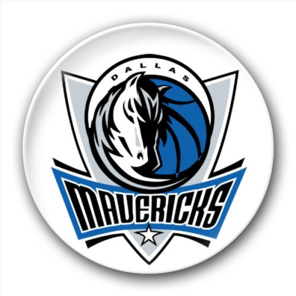
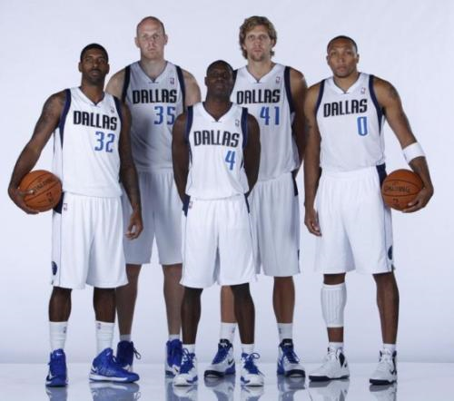
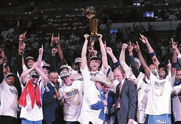

My Favourite NBATeam is
DALLAS MAVERICKS !


达拉斯小牛队（Dallas Mavericks）是一支位于美国德克萨斯州达拉斯的职业篮球队，1980年成立并加入美国男篮
职业联赛（NBA）。现从属于NBA西部联盟的西南赛区。在20世纪80年代，小牛队被视作一支有前途的球队。但在
90年代初，小牛队开始下坡路，两度逼近联盟历史最差战绩。90年代中期，小牛队重新开始恢复元气。1998年在选
秀大会上选中德 克・诺维茨基并交易得到史蒂夫・纳什后，小牛队正式成为西部劲旅。2005-06赛季小牛队首次夺得西
部冠军并进入NBA总决赛。2006-07赛季小牛队打出队史最佳的67胜15负战绩，成为常规赛冠军。2010-11赛季，
小牛队在季后赛中连续击败开拓者、湖人、雷霆，再次杀入总决赛，并最终复仇热火队，强势夺下队史首冠。
Top Star
